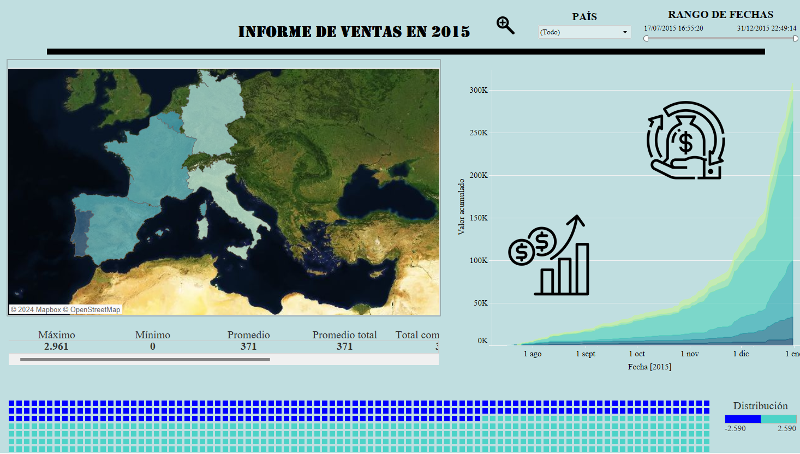

Se llevó a cabo un análisis de la serie temporal de temperaturas medias mensuales en Santiago de Compostela entre 2010 y 2023, utilizando modelos de suavizado exponencial y SARIMA para predecir temperaturas futuras.
Desarrollo de un dashboard interactivo con Tableau para analizar las ventas de varios países en 2015, proporcionando una visión completa del rendimiento de ventas.
Creación y desarrollo de una tienda online de ropa deportiva, con un enfoque en UX/UI y estrategias de marketing digital para atraer clientes.